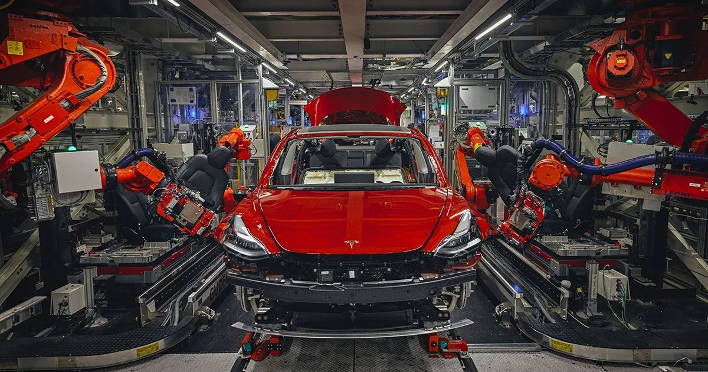

01 — Featured · Tesla Fremont · Jan – Aug 2026
Model 3 Body-in-White Manufacturing
Welding cell cycle-time optimization, OEM fixture reverse-engineering, and EOAT locating hardware on the live Model 3 body-in-white line — designed, machined, installed, and validated in production.
↓ 10s cycle time$88K OEM path6-DOF restoredIn production